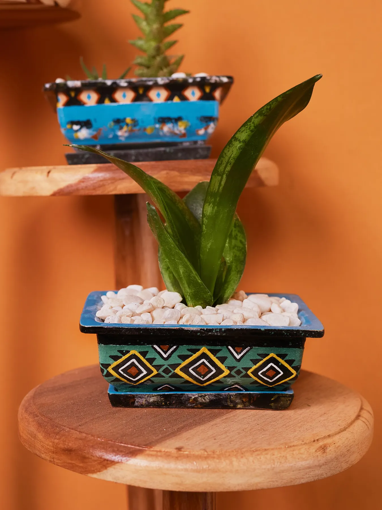
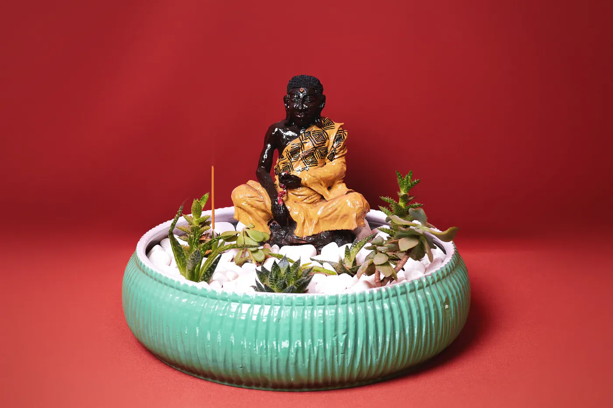

Lusaka's clay café
Makesomethingwonderful.
Pick up a brush, try the wheel, order something lovely and stay a little longer. At Casa Luano, getting your hands messy is part of the magic.
Come clay
with us!
with us!
Paint a pieceThrow some clayEat something goodStay a while
A different kind of afternoonCome as you are.
Come as you are.
Leave with a story.
Casa Luano brings pottery painting, wheel throwing and a cosy café together in one colourful space. Come on your own, bring a friend, make something imperfect and make a day of it.
The story behind Casa Luano made by hand,
made by hand,made to keep
Pick your kind of playThere’s more than
There’s more than
one way to make.
From your first brushstroke to the first pull on the wheel, there’s a place for you here.


A little play before you visit
Give the wheel a whirl.
Scroll past it or drag it yourself. A little preview of the satisfying rhythm of clay on the wheel.
Explore wheel workshopsObjects with personalityA little look at
A little look at
what's possible.
Every piece starts as clay. The rest is yours to imagine.


